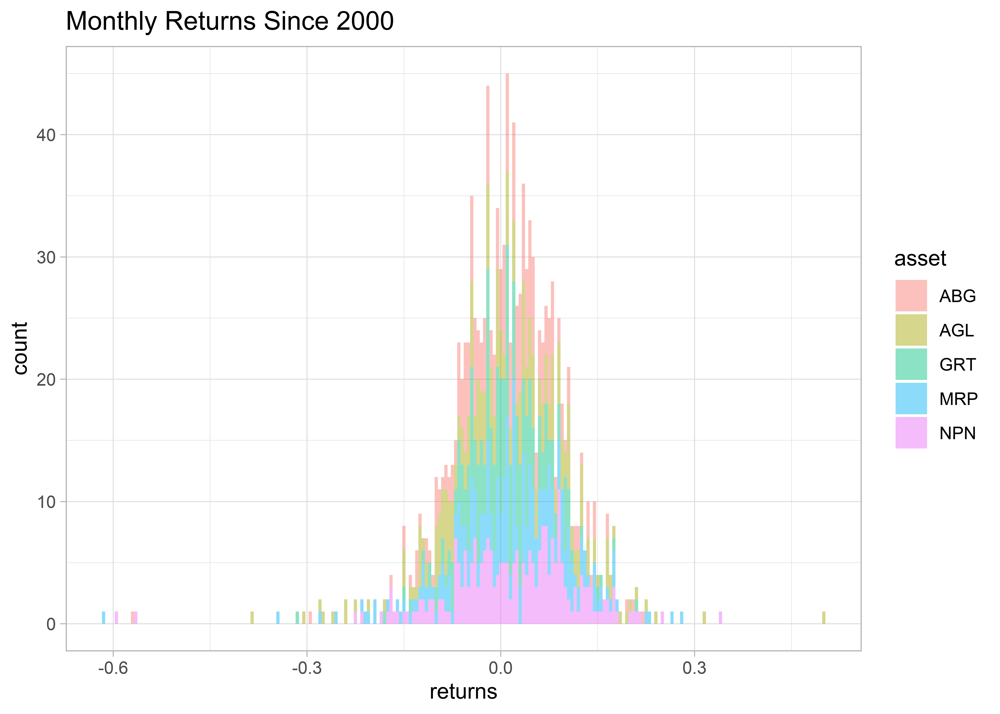
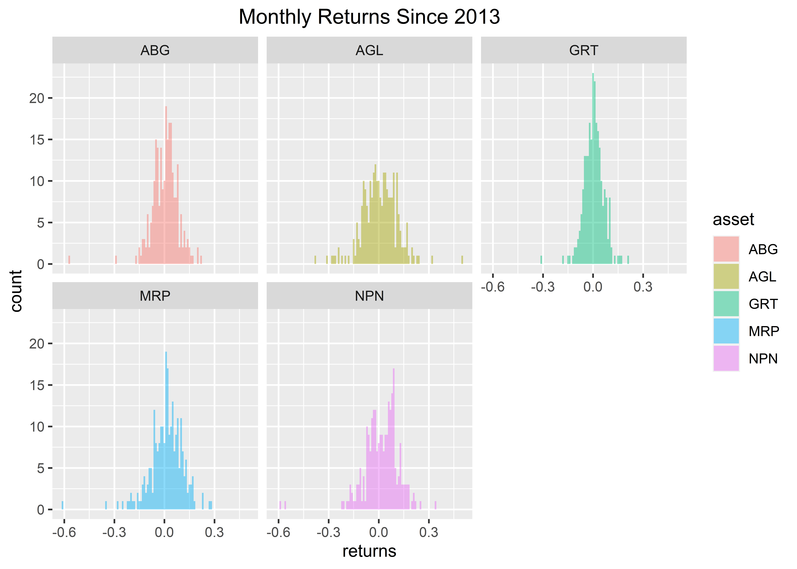
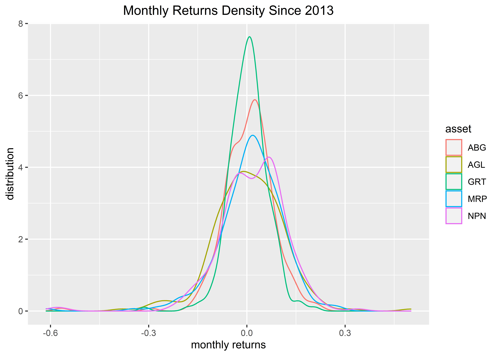
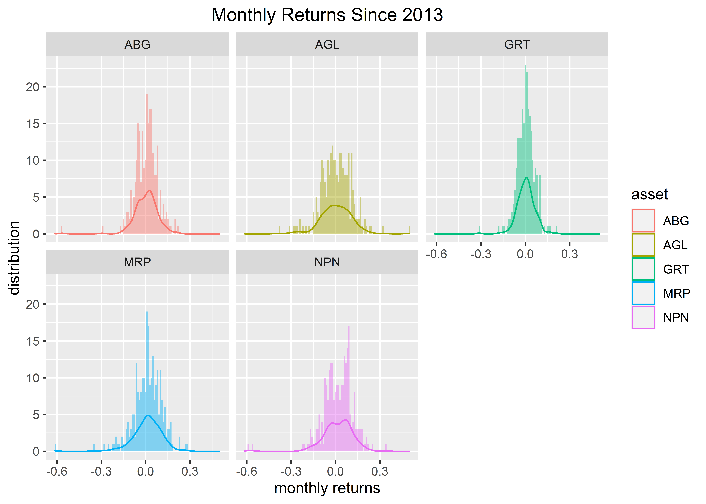
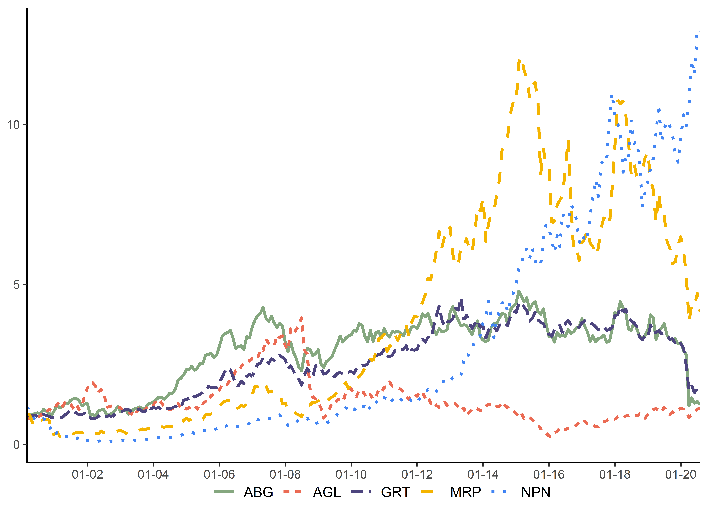

Next we will convert daily prices to monthly log returns.
I mentioned in the introduction that we would be working with three core packages - xts, tidyverse and tidyquant - the prices object is an xts, so we will use that here.
The first observation in our prices object is January 04, 2000 (the first trading day of that year) and we have daily prices. We want to convert to those daily prices to monthly log returns based on the last reading of each month.
We will use to.monthly(prices, indexAt = "last", OHLC = FALSE) from the quantmod package. The argument indexAt = “lastof” tells the function whether we want to index to the first day of the month or the last day. If we wanted to use the first day, we would change it to indexAt = “firstof”.
prices_monthly <- to.monthly(prices, indexAt = "lastof", OHLC = FALSE)
head(prices_monthly)| ABG | AGL | GRT | MRP | NPN | |
|---|---|---|---|---|---|
| 2000-01-31 | 2600 | 9154.60 | 492.94 | 745 | 5007.38 |
| 2000-02-29 | 2450 | 7321.62 | 468.29 | 715 | 5973.14 |
| 2000-03-31 | 2390 | 7779.87 | 443.65 | 683 | 5285.20 |
| 2000-04-30 | 2400 | 7398.85 | 443.65 | 530 | 4630.34 |
| 2000-05-31 | 2550 | 7790.16 | 453.51 | 630 | 4015.17 |
| 2000-06-30 | 2570 | 8294.75 | 419.00 | 678 | 3737.34 |
We have moved from an xts object of daily prices to an xts object of monthly prices. Note that we now have one reading per month, for the last day of each month.
Now we call Return.calculate(prices_monthly, method = “log”) to convert to returns and save as an object called asset_returns. Note this`will give us log returns by the method = “log” argument. We could have used method = “discrete” to get simple returns.
asset_returns <- Return.calculate(prices_monthly, method = "log") %>% na.omit()
head(asset_returns)| ABG | AGL | GRT | MRP | NPN | |
|---|---|---|---|---|---|
| 2000-02-29 | -0.0594234 | -0.2234249 | -0.0512997 | -0.0411017 | 0.1763599 |
| 2000-03-31 | -0.0247947 | 0.0607080 | -0.0540518 | -0.0457877 | -0.1223623 |
| 2000-04-30 | 0.0041754 | -0.0502150 | 0.0000000 | -0.2536179 | -0.1322802 |
| 2000-05-31 | 0.0606246 | 0.0515368 | 0.0219814 | 0.1728428 | -0.1425506 |
| 2000-06-30 | 0.0078125 | 0.0627614 | -0.0791464 | 0.0734275 | -0.0717056 |
| 2000-07-31 | -0.0196470 | 0.0196685 | 0.1006550 | -0.1222176 | 0.0700555 |
Do we notice anything of interest?
First, look at the date in each object. asset_returns has a date index, not a column. That index does not have a name. It is accessed via index(asset_returns).
A tibble would have a column called “date”, accessed via the $date convention, e.g. asset_returns_tbl$date. That distinction is not important when we read with our eyes, but it is very important when we pass these objects to functions.
Second, each of these objects is in “wide” format, which in this case means there is a column for each of our assets: ABG has a column, AGL has a column, GRT has a column, MRP has a column, NPN has a column.
This is the format that xts likes and this format is easier for a human to read. However, the tidyverse calls for this data to be in long or tidy format where each variable has its own column. For asset returns to be tidy, we need a column called “date”, a column called “asset” and a column called “returns”.
asset_returns_long <- asset_returns %>%
tk_tbl() %>%
gather(asset, returns, -index) %>%
group_by(asset)
rbind(head(asset_returns_long, 3), tail(asset_returns_long, 3))| index | asset | returns | index.1 | asset.1 | returns.1 |
|---|---|---|---|---|---|
| 2000-02-29 | ABG | -0.0594234 | 2020-05-31 | NPN | -0.0388891 |
| 2000-03-31 | ABG | -0.0247947 | 2020-06-30 | NPN | 0.1261272 |
| 2000-04-30 | ABG | 0.0041754 | 2020-07-31 | NPN | -0.0049822 |
It might seem odd that visualization is part of the data import and wrangling work flow and it does not have to be: we could jump straight into the process of converting these assets into a portfolio. However, it is a good practice to chart individual returns because once a portfolio is built, we are unlikely to back track to visualizing on an individual basis. Yet, those individual returns are the building blocks and raw material of our portfolio and visualizing them is a great way to understand them deeply. It also presents an opportunity to look for outliers, or errors, or anything unusual to be corrected before we move too far along in our analysis.
For the purposes of visualizing returns, we will work with two of our monthly log returns objects, asset_returns and asset_returns_long (the tidy, long-formatted tibble).
We start with the highcharter package to visualize the xts formatted returns. highcharter is an R package but Highcharts is a JavaScript library. The R package is a hook into the JavaScript library. Highcharts is fantastic for visualizing time series and it comes with great built-in widgets for viewing different time frames, plus we get to use the power of JavaScript without leaving the world of R code.
Not only are the visualizations nice, but highcharter “just works” with xts objects in the sense that it reads the index as dates without needing to be told. We pass in an xts object and let the package do the rest.
Let’s see how it works for charting our asset monthly returns. First, we set highchart(type = “stock”) to get a nice line format that was purpose-built for stocks.
Then we add each of our series to the highcharter code flow with hc_add_series(asset_returns[, symbols[1]], name = symbol[1]). Notice that we can use our original symbols object to reference the columns. This will allow the code to run should we change to different ticker symbols at the outset.
highchart(type = "stock") %>%
hc_title(text = "Monthly Log Returns") %>%
hc_add_series(asset_returns[, symbols[1]], name = symbols[1]) %>%
hc_add_series(asset_returns[, symbols[2]], name = symbols[2]) %>%
hc_add_series(asset_returns[, symbols[3]], name = symbols[3]) %>%
hc_add_series(asset_returns[, symbols[4]], name = symbols[4]) %>%
hc_add_series(asset_returns[, symbols[5]], name = symbols[5]) %>%
hc_add_theme(hc_theme_flat()) %>%
hc_navigator(enabled = FALSE) %>%
hc_scrollbar(enabled = FALSE) %>%
hc_exporting(enabled = TRUE) %>%
hc_legend(enabled = TRUE)Looks great! Let us head to the tidyverse and explore another visualization flow.
ggplot2 is a very widely-used and flexible visualization package, and it is included with the tidyverse. We will use it to build a histogram and have our first look at how tidy data plays nicely with functions in the tidyverse.
In the code chunk below, we start with our tidy object of returns, asset_returns_long, and then pipe to ggplot() with the %>% operator. Next, we call ggplot(aes(x = returns, fill = asset)) to indicate that returns will be on the x-axis and that the bars should be filled with a different color for each asset. If we were to stop here, ggplot() would build an empty chart and that is because we have told it that we want a chart with certain x-axis values, but we have not told it what kind of chart to build. In ggplot() parlance, we have not yet specified a geom.
We use geom_histogram() to build a histogram and that means we do not specify a y-axis value, because the histogram will be based on counts of the returns.
Because the data frame is tidy and grouped by the asset column (recall when it was built we called group_by(asset)), ggplot() knows to chart a separate histogram for each asset. ggplot() will automatically include a legend since we included fill = asset in the aes() call.
asset_returns_long %>%
ggplot(aes(x = returns, fill = asset)) +
geom_histogram(alpha = 0.45, binwidth = .005) +
ggtitle("Monthly Returns Since 2000")+
theme_light()
The figure above shows different colors for each asset, but we did not have add each asset separately.
facet_wrap(~asset) will break this into 5 charts based on the asset, as shown in the figure below.
asset_returns_long %>%
ggplot(aes(x = returns, fill = asset)) +
geom_histogram(alpha = 0.45, binwidth = .01) +
facet_wrap(~asset) +
ggtitle("Monthly Returns Since 2013") +
theme_light()+
theme_update(plot.title = element_text(hjust = 0.5))
Maybe we prefer a density line to visualize distributions. We can use geom_density(alpha = 1), where the alpha argument is selecting a line thickness. We also add a label to the x and y axis with the xlab and ylab functions.
asset_returns_long %>%
ggplot(aes(x = returns, colour = asset)) +
geom_density(alpha = 1) +
ggtitle("Monthly Returns Density Since 2013") +
xlab("monthly returns") +
ylab("distribution") +
theme_light()+
theme_update(plot.title = element_text(hjust = 0.5))
The figure above shows density charts by asset and we have now made histograms and density plots. Perhaps we would like to combine both of those into one chart. ggplot() works in aesthetic layers, which means we can chart a histogram in one layer, and then add a layer with a density chart. Figure 2.6 shows the results when we start with a density chart for each asset, then layer on a histogram, then facet_wrap() by asset.
asset_returns_long %>%
ggplot(aes(x = returns)) +
geom_density(aes(color = asset), alpha = 1) +
geom_histogram(aes(fill = asset), alpha = 0.45, binwidth = .01) +
guides(fill = FALSE) +
facet_wrap(~asset) +
ggtitle("Monthly Returns Since 2013") +
xlab("monthly returns") +
ylab("distribution") +
theme_light()+
theme_update(plot.title = element_text(hjust = 0.5))
The figure above is a good example of one chart, with histograms and line densities broken out for each of our assets. This would scale nicely if we had 50 assets and wanted to peek at more distributions of returns because ggplot() would recognize that each asset is a group. It would still be one call to ggplot() instead of 50.
This is the total return of a share or portfolio from the purchase date to evaluation date. Or put simply, cumulative returns show the amount you’d have if you had invested R1 at the start of the evaluation period. We can easily create a graph using the long format of the asset_returns by simply mutating the returns column.
asset_cumulative <- asset_returns_long %>%
group_by(asset) %>%
mutate(returns = cumprod(1+returns))Then we use ggplot2 to create a graph of returns
ggplot(asset_cumulative, aes(x = index, y = returns, linetype = asset))+
geom_line(aes(colour = asset), size = 1)+
theme_classic()+
scale_color_manual(values = rep(c("#85a77f", "#eb6b54", "#4d457e", "#F4B400", "#4285F4", "#FF00BF")))+
scale_x_date(expand = c(0,0), date_breaks = "2 years", date_labels = "%d-%y")+
labs(x = "", y = "")+
#+
# scale_linetype_manual(values = c("ABG" = "solid", "AGL" = "dashed", "GRT" = "solid",
# "MRP" = "solid", "NPN" = "dashed"))+
theme(legend.title = element_blank(),
legend.key = element_blank(), legend.text = element_text(size = 10),
legend.position = "bottom",
legend.margin=margin(c(-25,-25,-5,-5)),
plot.margin = unit(c(0.2,0.2,0.2,-0.3), "cm"))
Very nice. However, with a graph like this, perhaps it would be better if we had an interactive chart so that we can compare returns at any given point. That requires going back to the xts world. Fortunately, calculating cumulative returns in the world of xts is just as easy.
c.xts <- cumprod(1 + asset_returns)Creating the graph is simply a matter of reusing the previous code and just changing the source of the data.
highchart(type = "stock") %>%
hc_title(text = "Cumulative Returns") %>%
hc_add_series(c.xts[, symbols[1]], name = symbols[1]) %>%
hc_add_series(c.xts[, symbols[2]], name = symbols[2]) %>%
hc_add_series(c.xts[, symbols[3]], name = symbols[3]) %>%
hc_add_series(c.xts[, symbols[4]], name = symbols[4]) %>%
hc_add_series(c.xts[, symbols[5]], name = symbols[5]) %>%
hc_add_theme(hc_theme_flat()) %>%
hc_navigator(enabled = FALSE) %>%
hc_scrollbar(enabled = FALSE) %>%
hc_exporting(enabled = TRUE) %>%
hc_legend(enabled = TRUE)And voila. Look at that! So much nicer! Now with this graph, you can see how much you would have gained from each share at any point in time. Check out how well Mr Price was doing up until 2015, amazing! In 2015, it did as well as Naspers has to July 2020!
It is even possible to change the portfolio start date, such that you can see the cumulative returns from any point in the sample period to any point in the sample period. However, that would require a reactive context (such as Shiny) or porting the code to Javascript. Both options are an unnecessary expense for the purposes of this document.